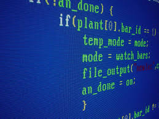
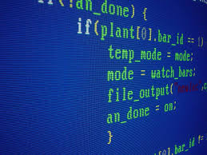

Informatyka – dyscyplina nauki zaliczana do nauk ścisłych oraz techniki zajmująca się przetwarzaniem informacji, w tym również technologiami przetwarzania informacji oraz technologiami wytwarzania systemów przetwarzających informacje. Początkowo stanowiła część matematyki, później rozwinęła się do odrębnej dyscypliny – pozostaje jednak nadal w ścisłej relacji z matematyką, która dostarcza informatyce podstaw teoretycznych.
 
 
Grafika Programowanie Sieci